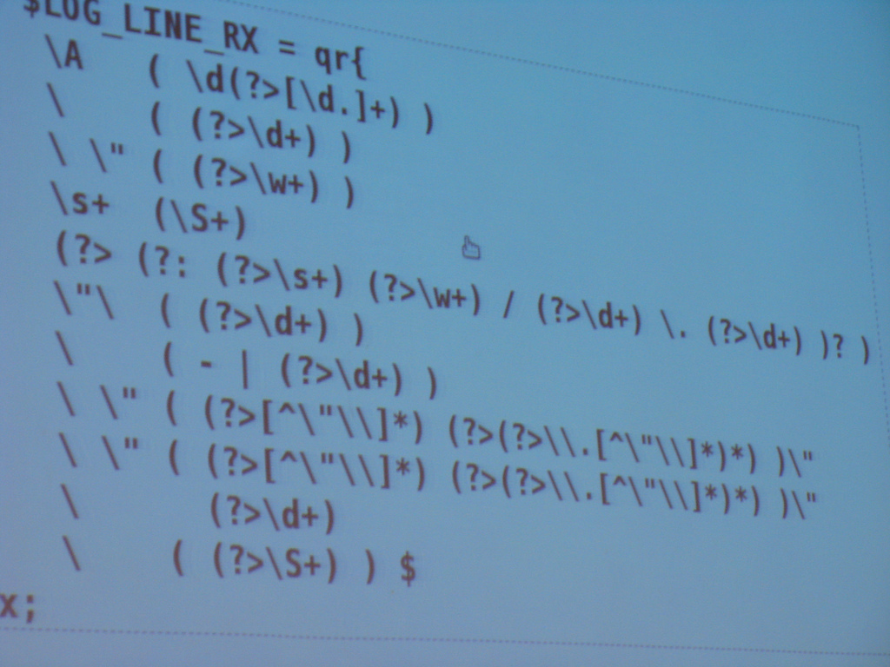

Илья Бреев Rotapost.Ru
что это?!
Регулярное выражение - шаблон (образец), по которому выполняется поиск соответствующего ему фрагмента текста
[А-Я]\d{3}[А-Я]{2}\d{2}RUSтам, где начинается магия
. (точка)[abc] (один символ из указанного набора)\d (один символ, принадлежащий некой группе)[^abc] или \D (один символ, кроме тех, что в наборе)\ (делает из любого служебного символа обычный)^some$ (обозначают не символ в тексте, а позицию){4} + * ? (обозначают количество повторений символа)Frid.y - под эту строку попадают и Friday, и Frid<y, и даже FridЫy
Чтобы искать саму точку, её нужно заэкранировать
Friday\. - это выражение будет искать в точности строку "Friday." и именно с точкой на конце
Регулярное выражение подразумевает один из символов указанных внутри квадратных скобок на место, где они указаны
Frid[aoe]yНаделены особым смыслом в том фреймворке, в котором вы работаете. О значениях - читать документацию.
Frid\wyУказывают движку регулярных выражений на определенную позицию в тексте.
^Friday$Позволяют задать количество вхождений символа или группы в искомую строку. Примеры:
\d{3} три идущие подряд цифры[a-z]{4,8} от 4 до 8 любых латинских букв, идущих подрядa+ хотя бы одна буква "a", но можно и больше.* 0 или больше любых символовhttps? необязательная буква s в конце (и http и https совпадут)Все они по умолчанию - жадины
(Friday) - группа с порядковым номером(?<tag>Friday) - группа с именем(?:Friday) - незахватывающая группаFriday(?= we) - Friday weFriday(?! we) - Friday us(?<=In )Friday - In Friday(?<!In )Friday - Out Friday
using System.Text.RegularExpressions;var regex = new Regex(@"Hello, world",RegexOptions.Compiled);var isMatch = regex.IsMatch("Hello, Friday");var matches = regex.Matches("Hello, world and friday");String result;foreach (Match match in matches)result = match.Value;